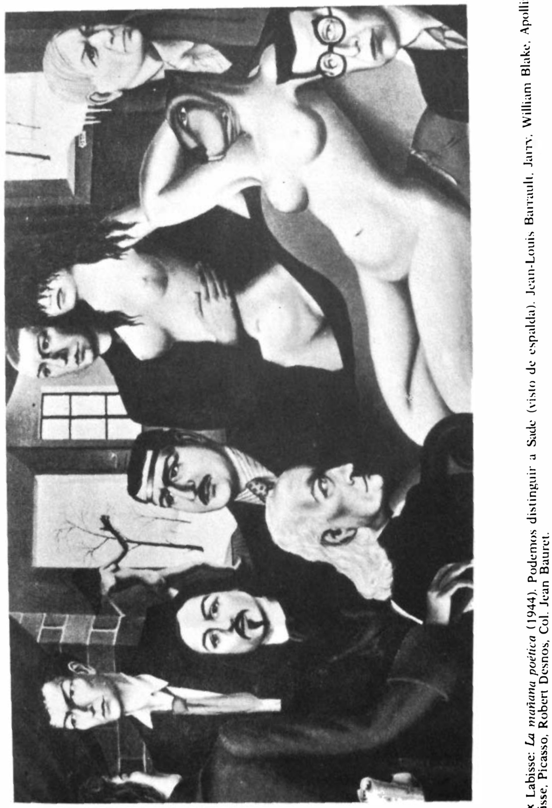

Lágrimas de Eros · Obra 110 de 121
La mañana poética (La Matinée poétique)
Félix Labisse (1944)

Un retrato de grupo imaginario con desnudos. Según Bataille, de izquierda a derecha: Sade de espaldas, Jean-Louis Barrault, Jarry, William Blake, Apollinaire, el propio Labisse, Picasso y Robert Desnos. Labisse lo expuso en el Salon des Tuileries de 1944.
Lo que hace que destaque
Un retrato de grupo imaginario con desnudos. Según Bataille, de izquierda a derecha: Sade de espaldas, Jean-Louis Barrault, Jarry, William Blake, Apollinaire, el propio Labisse, Picasso y Robert Desnos. Labisse lo expuso en el Salon des Tuileries de 1944.
Contexto histórico
Sede actual desconocida.
Autoría y procedencia
Félix Labisse (1905-1982), pintor e ilustrador surrealista francés, creador de universos fantásticos poblados de figuras híbridas y mujeres de tonos azulados y metamórficos.
En los libros
Las lágrimas de Eros, de Georges Bataille · Lámina de la p. 191
Ficha pendiente de contrastar con fuentes académicas.